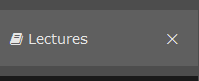
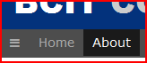
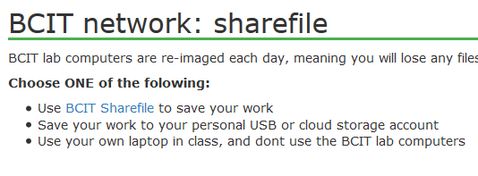
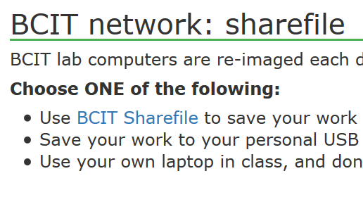
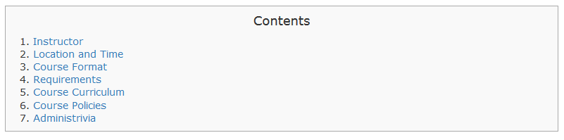

Appropriate amount of information – the client does not like too much information on main website, i.e., navigation menu should not be too deep.
The purpose of website is clear.
Include lecture notes, resource, exercises, and examples of COMP1950.
Include course curriculum, timetable, room information, grading, and BCIT policies as secondary objective.
Students use the website as course aids.
To be convenient for students to find and engage in exercises and examples.
Keep all exercises in one location.
View latest lecture notes
Lecture notes that have not occurred yet should not be accessible.
Include links to all related sources: bcit.ca, my.bcit.ca, and COMP1950 course outline on bcit.ca.
The BCIT logo and related properties must not be used.
All operating systems (windows/mac/linux).
All browsers (firefox, safari, chrome, opera, IE)
Desktop and laptop devices primary – mobile devices and tablets are not commonly used – breakpoints not required.
The client requests the quiz form might look like, but it is not necessary to be functional now.
Layout
We have chosen a 3-column layout which contains header and top navigation at the top followed by sidebar menu at left, main section at the middle, and quick links at the right.
Because the client does not like too much information on website, the dropdown would contain nested navigation. To achieve the client's goal, in the top navigation, we put only the first level of menu items, i.e., About, Lectures, Exercises, etc, and deeper levels of menu items will be at left sidebar. When a page is loaded, only its submenu items would be rendered in sidebar menu. As as result, we prevent deep navigation.
In current website, although there is a bookmark to jump at the top located at the bottom of the page, users always have to go back to the top. In case of the large contents, they have to scroll to the top if they are at middle of the page because neither bookmark nor navigation are displayed on the screen. To solve this user experience issue, the positions of the top and sidebar nav are fixed. Therefore, users can navigate and surf other pages anytime they want.
Providing quick links at right, users can surf to outside of webpage. Default setting of quick links are located at inc file because common quick links are rendered entire website with modifying 1 inc file. the client can add custom quick links by implementing a page directly.

Clicking X to collapse sidebar

To expand sidebar, click ☰
The sidebar menu is collapsing by clicking "X" and expandable by clicking ☰ at the top nav menu. While users are reading contents, the sidebar is not necessary to display. If users wish to read contents with wider screen, they can close the sidebar and re-open if they need. If submenu does not exist, then this feature is disabled.
Stylesheets

Normal style

Projector style
As user requests that the website is used in-class overhead projector, we created alternate stylesheet for projector. Sidebar menu and right column become hidden, and only header and main contents are now displayed on the screen. Because the font size is larger than normal, without adjusting screen setting in Control Panel, instructor can show contents as PowerPoint, and students are able read clearly. The sidebar menu is still expandable, but right column is completely hidden because the information is not required in-class.
If students wish to print out lecture notes, the print stylesheet is provided.
Home Page
We have decided that we use the home page as a dashboard instead of course description because users almost always access to the home page, so we consider that home page should be used for communication tools between instructor and students.
The main section is now splitted into 2 columns: left and right sections. News and recent released lecture notes sections are in the left column. News is a list of posts published by instructor to notify students for important information such as class cancellation, exam information, etc. As the client requests that students should be able to view latest lecture notes, the released notes would be listed so that students can see without navigating. At the right column, the list of important dates is posted in chronological orders.
Contents Box

Contents
If a page is very large, users have to scroll down the page to find topic what they are looking for. The course syllabus and lecture notes are good examples. To solve this experience, contents are provided at the top, and we set bookmark for each topic. As a result, users looks through just contents and jump to the topic if they found. This can save time for searching.
Lectures/Exercises
In current COMP1950 course website, lecture notes and exercises are mixed up. As the client requests that all exercises are kept in one location, we separate lectures and exercises and put a link of related exercise at right column in lecture notes page and vise versa.
We have concluded that it is better to keep examples inside of lecture notes. Based on our experience, we go through examples after reading notes, and we usually back and forth between notes and examples.
Usually, each lecutre note for a session is posted in single page. All exercises for a session are also posted in single page. Therefore, exactly same sidebar menu would be rendered in entire lecture notes/exercises pages. It is inefficient that the client open each page and update the sidebar menu when new lecture notes/exercises are released. To prevent this, including inc files, the client just modifies single file to update the sidebar for entire pages. It is very convenient. Then, we use jQuery to find which menu item is now active. This technique is also used for nav menu.
Quizzes
The online quizzes are now provided at new version. Accessing Quizzes from the top navigation menu, the quiz tip and a list of available quizzes is now shown. Clicking Start button at a quiz list, a small window is opened, and the quiz form is appeared. There is a timer at the top of quiz form, and it counts down to 0 second. We use a countdown jQuery plugin. The client can adjust time limit by changing attributes.
For further development, filling quizzes must be disabled after the time exceeded and force to submit. Also we need to consider the business process after submitting quizzes such as rendering answers to PDF or print, notifying students that submission is completed etc. More discussion with the client is required.
Critical: The countdown would be reset when the browser is refreshed. The counter should not be reset even students press the refresh button, otherwise, students can answer questions endlessly. We could not find the way how to disable refreshing or prevent reset the time even users click the refrsh button. Further research is required.
Resources
CSS3 flexbox provides more efficient way for layout, alignment, and distribution among items in a container, even when the size of items is unknown. The flexbox has an ability to maximize filling the available space, and this would prevent overflow, be able to change order and direction without HTML modification. In future, the number of resource items might increase. Therefore, it is a good idea to keep resources organized. Since screen width is vary, it is a good tool to lay out. For more information about CSS3 flexbox, go to CSS3 Flexbox at W3Schools or a Complete Guide to Flexbox.
Further Development ...
The client mentions that desktop and laptop is primary devices to access website; however, it is for sure that students review notes via mobile devices. We did not optimize for mobile devices this time, but it is a useful feature.
In current website, the communication is now one way direction from instructor to students such as news, important date. It is better to make more interactive. For example, students post questions and comments like discussion board.
Business process after quiz submission and countdown reset issue - more details at Quizzes.